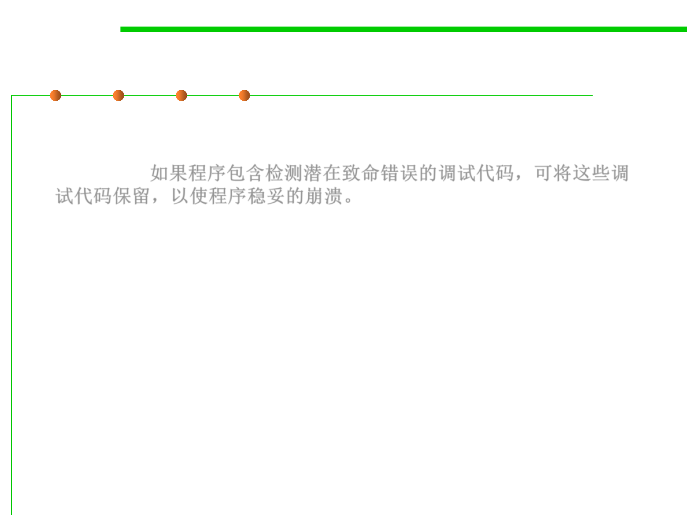

7.3 Assertions and Defensive Programming
(4) Leave in code that helps crash gracefully
▪ If your program contains debugging code that detects potentially
fatal errors, leave the code in that allows the program to crash
gracefully. 如果程序包含检测潜在致命错误的调试代码，可将这些调
试代码保留，以使程序稳妥的崩溃。
▪ E.g.，in the Mars Pathfinder火星探路者, for example, engineers left
some of the debug code in by design. An error occurred after the
Pathfinder had landed.
▪ By using the debug aids that had been left in, engineers at JPL were
able to diagnose the problem and upload revised code to the
Pathfinder, and the Pathfinder completed its mission perfectly
(March 1999).